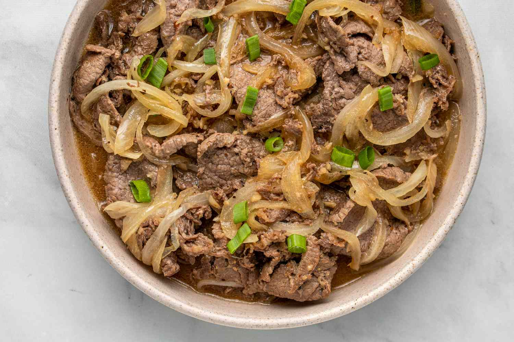

Bistek

Description
Bistek, often referred to simply as "Bistek," is a classic Filipino dish that showcases tender slices of beef marinated in a soy sauce and calamansi (or lemon) mixture, then pan-fried and simmered with onions.
The dish is known for its savory, tangy, and slightly sweet flavor profile, which perfectly complements the succulent beef.
Bistek is typically served with steamed white rice, making it a comforting and satisfying meal that is both easy to prepare and deeply flavorful.
The key to a great Bistek is in the marination process, which infuses the beef with the rich, umami flavors of soy sauce and the bright acidity of calamansi.
After marinating, the beef is quickly pan-fried to lock in the juices and develop a nice sear.
Sliced onions are then caramelized in the same pan, adding a touch of sweetness to the dish.
The beef and onions are combined and simmered in the marinade until the flavors meld together, creating a deliciously balanced sauce.
Bistek is often garnished with additional caramelized onions and served with a side of vegetables, making it a well-rounded and delectable dish that is a staple in Filipino cuisine.
Ingredients
- 1 pound beef sirloin or tenderloin, thinly sliced
- 1/4 cup soy sauce
- 1/4 cup calamansi juice (or lemon juice)
- 3 cloves garlic, minced
- 1/2 teaspoon ground black pepper
- 1 large onion, sliced into rings
- 2 tablespoons vegetable oil
- 1/2 cup water
- Salt to taste
- Cooked white rice (for serving)
Steps
-
Marinate the Beef
- In a bowl, combine the soy sauce, calamansi juice, minced garlic, and ground black pepper.
- Add the thinly sliced beef to the marinade, ensuring each piece is well-coated. Marinate for at least 30 minutes, or overnight for best results.
-
Cook the Beef
- Heat 1 tablespoon of vegetable oil in a large pan over medium-high heat.
- Remove the beef from the marinade, reserving the marinade for later use.
- Pan-fry the beef slices in batches until browned and slightly seared. Set the cooked beef aside.
-
Caramelize the Onions
- In the same pan, add the remaining 1 tablespoon of vegetable oil.
- Add the sliced onions and cook until they become soft and caramelized, about 5-7 minutes.
-
Simmer the Beef
- Return the cooked beef to the pan with the onions.
- Pour the reserved marinade into the pan and add 1/2 cup of water.
- Bring to a boil, then reduce the heat to low and let it simmer for about 10-15 minutes, or until the beef is tender and the flavors are well combined.
- Adjust seasoning with salt if needed.
-
Serve
- Transfer the bistek to a serving dish.
- Garnish with additional caramelized onions if desired.
- Serve hot with steamed white rice.